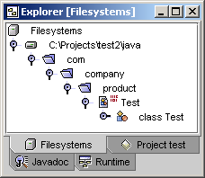

There are two ways to allocate a project under Sun ONE Studio/NetBeans: follow the recommended guidelines for setting up projects or set up the project via a custom way. This section describes how to allocate a project in the IDE so that RefactorIT can automatically detect its settings. If you prefer a custom method, you can always set the project's settings in the RefactorIT Options dialog (Tools->RefactorIT->RefactorIT Options).
Assuming that your are at least using Sun ONE Studio 4, the following project is utilized in the examples below:
<project root> + lib - myjar.jar - servlet-api.jar - ... + java + com + company + product ...
For Sun ONE Studio/NetBeans to compile your project and RefactorIT to function, you must properly mount the source files and libraries. Source files (.java files) must be mounted in the default package directory on the Filesystems window. The default package directory is where the default (unnamed) package resides, in this example, <project root>/java. The default package directory usually does not contain .java files, but if it does, the source files do not have "package ...;" statement as one of the first rows.
STEPS
A new mounted filesystem should now appear in the Filesystems tab. You can expand it to browse your source files.

Note that if your project uses source files from other directories, you have to mount those source files as well. Ensure that you mount directories at the default package root.
Custom libraries (usually .jar) are required by most projects as they contain compiled classes that a project uses. All libraries required by a project in order to compile, must be mounted. In Sun ONE Studio/NetBeans, any .jar file mounted in the Filesystems tab is automatically treated as such a library and is added to the class path when compiling. In our sample project, all external libraries are located in the directory "<project root>/lib".
STEPS
If the project as mounted in Sun ONE Studio/NetBeans does not compile successfully, RefactorIT might not work properly.
To see if the project compiled:
If your project still does not compile, you are probably missing an external library, thus mount it and re-compile. If your project uses an external build script (such as Makefile, Ant build.xml) verify what that script does to compile your project and mount the necessary paths in the Filesystems tab. Usually, you have to add additional libraries to CLASSPATH.